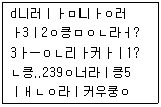
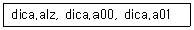
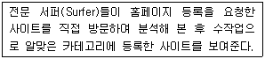

인터넷정보관리사-2급 (2009-12-06 기출문제)
1과목: 인터넷의 이해
1. 인터넷의 특징으로 올바르지 않은 것은?
- TCP/IP를 기본 프로토콜로 사용한다.
- 클라이언트/서버 시스템을 기반으로 한다.
- 중앙에 별도로 인터넷을 관리하고 통제하는 기구가 없다.
- 리눅스 운영체제만을 기반으로 한 세계적인 컴퓨터 통신망이다.
(정답률: 89%)

2. 인터넷의 역사 중에서, 미 국방성의 ARPANET이 탄생한 연도로 알맞은 것은?
- 1955년
- 1960년
- 1969년
- 1976년
(정답률: 69%)
3. 국가 5대 기간전산망이 아닌 것은?
- 산업전산망(INIS)
- 국방전산망(DNIS)
- 공안전산망(SNIS)
- 정부행정전산망(NATIS)
(정답률: 62%)
4. 다음 중 차상위 도메인(SLD)이 아닌 것은?
- or
- re
- ac
- kr
(정답률: 80%)
5. 인터넷 주소체계에 대한 설명으로 틀린 것은?
- IP주소는 인터넷에 연결된 컴퓨터에 부여되는 숫자로 된 고유의 주소를 뜻한다.
- IP는 Internet Protocol의 약자이다.
- IPv4는 64비트 체계이며, 16비트씩 4개의 옥텟으로 구성되어 있다.
- IPv4는 10진수 숫자로 표기된다.
(정답률: 82%)
6. 영문 도메인 구성에 대한 설명으로 틀린 것은?
- 도메인에 언더바(_)의 기호를 사용할 수 없다.
- 영문자의 대ㆍ소문자 구별이 있다.
- 도메인의 길이는 최소 2자에서 최대 63자까지 가능하다.
- 공백(space)은 허용하지 않는다.
(정답률: 94%)
7. 해외 도메인 구조에서 국가별 최상위 도메인 연결이 적합하지 않은 것은?
- ch : 중국
- uk : 영국
- de : 독일
- us : 미국
(정답률: 53%)
8. 인트라넷(Intranet)에 대한 설명으로 틀린 것은?
- 특정 사용자 그룹을 위한 네트워크이다.
- 인터넷 기술과는 무관하며 장소의 제약을 받는다.
- 내부 정보의 외부 유출을 막기 위해 방화벽을 설치할 수 있다.
- 회사의 정보나 자원을 직원들 간에 서로 공유하기 위한 조직 내부의 네트워크이다.
(정답률: 86%)
9. 방송통신위원회 홈페이지 주소로 맞는 것은?
- http://www.kcc.co.kr
- http://www.kcc.or.kr
- http://www.kcc.go.kr
- http://www.kcc.re.kr
(정답률: 74%)
10. 전자우편을 보낼 때, 헤더의 구성요소가 아닌 것은?
- From : 송신자
- To : 수신자
- Cc : 참조자
- Co : 숨은 참조자
(정답률: 93%)
11. 웹 메일에 대한 설명으로 가장 적절하지 않은 것은?
- 웹 메일의 이용을 위해서는 인터넷 연결이 필요하다.
- 여러 포털사이트에서 웹 메일 서비스를 제공하고 있다.
- 웹 메일의 발송시 파일 첨부도 가능하다.
- 개인이 2개 이상의 웹 메일 서비스에 가입하여 이용하는 것은 불법이다.
(정답률: 96%)
12. Anonymous FTP에 대한 설명 중 틀린 것은?
- Anonymous FTP 서버에 있는 파일을 전송 받을 수 있다.
- 정식 계정이 없는 사용자도 접속할 수 있는 서비스이다.
- 웹 브라우저로도 접속하여 이용할 수 있다.
- 비밀번호를 입력할 때는 일반적으로 사용자의 집 전화번호를 입력한다.
(정답률: 92%)
13. FTP 명령어 중에서 하나의 파일을 자신의 컴퓨터로 다운로드하기 위한 것은?
- get
- put
- mget
- mput
(정답률: 77%)
14. 유즈넷에 대한 설명으로 맞는 것은?
- 주제에 따라 분류된 계층적 구조를 이루고 있다.
- 기사를 전송하기 위해 개발된 프로토콜은 NNTP이다.
- 유즈넷 서비스를 제공하는 역할을 하는 컴퓨터를 뉴스 리더라고 한다.
- FTP 서버에 있는 텍스트 정보를 검색해 주는 역할을 한다.
(정답률: 56%)
15. 유즈넷에 관련된 용어 중 교차투고에 관한 설명은?
- 특정한 뉴스그룹의 기사를 보거나 해당 뉴스그룹에 글을 등록하기 위해 참여하는 것이다.
- 실제로 작성한 기사는 하나지만 해당되는 뉴스그룹 모두에서 보이도록 올리는 것이다.
- 각 뉴스그룹마다 해당 기사를 각각 반복해서 올리는 것이다.
- 중재그룹에서 기사를 요약하는 것이다.
(정답률: 67%)
16. 채팅 프로그램이 아닌 것은?
- MSN Messenger
- NateOn
- Buddy Buddy
- PhotoScape
(정답률: 100%)
17. 메신저를 사용하여 상대방과 대화를 나눌 때 자신의 감정을 아스키(ASCII) 문자로 표현할 수 있는 것을 뜻하는 용어는?
- 두문자어(Acronym)
- 이모티콘(Emoticon)
- 채널(Channel)
- 아바타(Avatar)
(정답률: 88%)
18. 전자상거래의 설명으로 가장 알맞지 않는 것은?
- 넓은 의미로 고객 마케팅, 광고, 행정, 재무, 구매 등을 포함하여 거래에 필요한 제반정보를 교환하는 것이다.
- 상품수요에 대한 정보파악이 용이하다.
- 시간과 공간의 제약이 없고 비용이 절약되며 운영비가 저렴하다.
- 중개인이 필요한 불완전시장이다.
(정답률: 73%)
19. 각종 승차권, 입장권 등을 표준화된 칩을 사용하여 전자화한 것으로 항공권, 기차 승차권, 공원 입장권 등을 직접 사용하지 않고 별도의 카드나 휴대폰에 칩을 내장하여 전산 처리한 것을 뜻하는 용어는?
- 전자우표
- 전자메일
- 전자티켓
- 온라인우표
(정답률: 74%)
20. 공공기관의 개인정보보호에 관한 법률의 적용을 받지 않는 정보는?
- 성명
- 주민등록번호
- 다른 정보와 결합함으로써 개인 식별을 가능케 하는 정보
- 통계작성 및 학술 연구 등의 목적을 위한 경우 특정개인을 식별할 수 없는 정보
(정답률: 88%)
21. 컴퓨터프로그램보호법상 프로그램 저작권은 언제부터 발생하는가?
- 프로그램이 공표된 다음해부터
- 프로그램이 공표된 후 3년 뒤부터
- 법원에 저작권을 신고한 때부터
- 프로그램이 창작된 때부터
(정답률: 65%)
22. 인터넷 카페란 인터넷 동호회, 향우회, 동창회 등과 같이 사이버 공간에서 비슷한 관심사를 가진 사람들끼리 다양한 만남이 이루어질 수 있도록 인터넷 포털 사이트에서 제공하는 커뮤니티이다. 이러한 인터넷 카페가 미치는 긍정적 영향으로 거리가 먼 것은?
- 관심 분야 정보 공유
- 전문 지식 획득 가능
- 극단적인 다수의 동호회 생성
- 공통의 관심사를 갖는 동호회 생성
(정답률: 94%)
23. 전자서명법에 관한 설명으로 옳지 않은 것은?
- 전자서명의 효력을 규정한 전자서명법의 가장 핵심적인 규정이다.
- 전자거래의 활성화를 위하여 공인인증기관이 인증한 전자서명에 대하여 법적 효력을 부여하고 있다.
- 전자서명은 서명 또는 기명날인과 동일한 효력을 가진다.
- 전자서명은 아직까지 문서 성립의 진정성의 확보와 문서의 증거력이 없다.
(정답률: 92%)
24. 인터넷 게시판에 등록된 글의 일부이다. 이와 같은 상황에 가장 알맞은 인터넷 윤리는?

- 소프트웨어는 반드시 정품을 사용한다.
- 자신의 비밀번호를 타인에게 공개하지 않는다.
- 정확하고 어법에 맞는 언어를 구사해야 한다.
- 파일을 송ㆍ수신할 때는 업무시간을 피하는 것이 좋다.
(정답률: 69%)
25. 본문의 내용과는 상관없는 악의적인 리플을 반복해서 달아놓는 사람을 무엇이라고 하는가?
- 얼리 어답터
- 악플러
- 지킴이
- 네티즌
(정답률: 79%)
26. 유즈넷 사용시의 네티켓으로 옳지 않은 것은?
- 부정확하거나 추측의 글은 올리지 않는다.
- 동일한 기사는 여러 뉴스그룹에 많이 올려 사람들이 많이 접근할 수 있도록 한다.
- 뉴스 그룹의 성격에 맞추어 글을 올린다.
- 연습용 글은 테스트 그룹에 올린다.
(정답률: 86%)
27. 컴퓨터의 기능으로 거리가 가장 먼 것은?
- 입력기능
- 기억기능
- 연산기능
- 수동기능
(정답률: 71%)
28. 벨연구소에서 만든 운영체제로 개인용, 대형, 마이크로 컴퓨터에 이르기까지 많은 종류에서 사용되고 있으며 멀티유저, 멀티태스킹을 지원하는 것은?
- Windows
- Unix
- Linux
- MS-Dos
(정답률: 46%)
29. 사용자가 컴퓨터를 원활히 사용할 수 있도록 컴퓨터 시스템을 제어하며 컴퓨터와 사용자간의 상호 교신을 담당하는 시스템 소프트웨어를 총칭하는 것은?
- 비트
- 바이트
- 운영체제
- 플러그 앤 플레이
(정답률: 80%)
30. 그래픽 편집기로 가장 거리가 먼 것은?
- Flash
- 페인트샵
- 알맵
- 포토샵
(정답률: 53%)
31. 전용선을 이용한 인터넷 연결의 환경설정에서 꼭 필요한 정보로 가장 거리가 먼 것은?
- IP 주소
- 게이트웨이
- PPP
- 서브넷 마스크
(정답률: 74%)
32. 전용선과 전송속도가 바르게 연결된 것은?
- T1 : 2.044Mbps
- E1 : 4.048Mbps
- T2 : 8Mbps
- T3 : 45Mbps
(정답률: 60%)
33. 인터넷 접속을 위한 케이블 TV망에 대한 설명으로 틀린 것은?
- 케이블TV망이 설치된 지역에서 서비스가 가능하다.
- 일반적으로 전화선을 이용한 모뎀방식에 비해 고속의 전송속도를 제공한다.
- 전화선이 연결되어야 이용이 가능하다.
- 케이블 TV망에 연결할 수 있는 케이블 모뎀이 필요하다.
(정답률: 50%)
2과목: 인터넷 자원 탐색
34. xDSL에 대한 설명으로 잘못된 것은?
- 모든 디지털 가입자 회선을 통칭하여 부르는 말이다.
- 전이중(Full Duplex)으로 데이터를 빠르게 전송할 수 있는 모뎀 기술을 의미한다.
- 광케이블을 이용해 광대역폭을 지원하는 공중망 기술이다.
- xDSL에는 HDSL, SDSL, VDSL 등 여러 종류의 기술이 있다.
(정답률: 50%)
35. ISDN의 채널 중 사람의 음성, 오디오, 비디오 등의 데이터를 전송하는 역할을 담당하는 것은?
- B채널
- C채널
- X채널
- Y채널
(정답률: 67%)
36. VDSL에 대한 설명으로 틀린 것은?
- 전화선을 이용할 수 있다.
- 멀티미디어, 원격교육 등의 대용량 데이터 처리에 적합하다.
- ADSL보다 다운로드 속도가 빠르다.
- 케이블 TV망 선이 반드시 필요하다.
(정답률: 34%)
37. 프록시 서버에 대한 설명으로 틀린 것은?
- 사용자 PC에 저장된 파일에 대한 백업 기능을 제공한다.
- 네트워크의 데이터 캐시 기능을 제공한다.
- 외부로부터 불법적 침입을 방지하는 방화벽 기능을 제공한다.
- 웹 서버와 웹 브라우저 사이에서 데이터 중계역할을 한다.
(정답률: 34%)
38. 웹 브라우저의 플러그인에 대한 설명으로 가장 적합하지 못한 것은?
- 웹 브라우저가 자체적으로 실행하지 못하는 파일형식들을 지원하기 위해서 설치되는 외부 보조 프로그램이다.
- 웹 브라우저의 속도를 빠르게 한다.
- 일반적으로 웹 브라우저와 함께 실행되나 일부 단독으로 실행이 가능한 프로그램도 있다.
- 내장되어 있는 프로그램의 예로는 Windows Media Player가 있다.
(정답률: 40%)
39. 파일의 확장자와 플러그인 프로그램이 올바르게 짝지어진 것은?
- ZIP : Microsoft PowerPoint
- PDF : Acrobat Reader
- HWP : Winamp
- BGDB : Windows Media Player
(정답률: 58%)
40. HTML 태그 중 참고로 하고자 하는 내용을 입력해 두는 주석문을 사용하기 위한 것은?
- <%--주석내용-->
- <*--주석내용-->
- <!--주석내용-->
- <@--주석내용-->
(정답률: 62%)
41. 웹 프로그래밍 언어는 서버측과 클라이언트측으로 나눌 수 있는데, 다음 중 클라이언트측 언어가 아닌 것은?
- CGI
- CSS
- HTML
- SGML
(정답률: 18%)
42. 다음 중 나모 웹 에디터나 드림위버와 가장 관련 있는 것은?
- 텍스트(TEXT) 기반의 웹 에디터
- 위지윅(WYSIWYG) 기반의 웹 에디터
- 워드프로세서에서의 HTML 파일형식의 에디터
- 유닉스 기반의 이미지 에디터
(정답률: 50%)
43. HTML 문서에서 같은 문서 내에 ‘rink’라는 책갈피를 지정했다면, 이 책갈피 위치로 링크시키는 태그로 올바르게 작성된 것은?
- <a rink="rink">이동</a>
- <body="rink">이동</body>
- <a href="rink">이동</a>
- <a href="#rink">이동</a>
(정답률: 0%)
44. HTML 태그 중 글자를 이탤릭체로 표현하기 위한 것은?
- <b>...</b>
- <sub>...</sub>
- <i>...</i>
- <u>...</u>
(정답률: 58%)
45. 개인이나 기업체에게 인터넷 접속 서비스, 웹 사이트 구축 등의 인터 넷 서비스를 제공하는 업체를 의미하는 용어는?
- OSI
- ISP
- MIS
- BIZ
(정답률: 64%)
46. 프로그램을 개발하여 공개된 이후에 발견한 오류들에 대하여 추가적인 보완을 할 수 있도록 사용자에게 배포되는 후속 프로그램을 지칭하는 것은?
- 패치(Patch)
- 버그(Bug)
- 감사(Audit)
- 리콜(Recall)
(정답률: 80%)
47. 다음 중 멀티미디어의 특징으로 볼 수 없는 것은?
- 양방향성(Interactive)
- 비선형성(Non-Linear)
- 아날로그(Analog)
- 통합성(Integration)
(정답률: 65%)
48. 이미지 파일의 확장자가 아닌 것은?
- JPEG
- BMP
- GIF
- WMV
(정답률: 75%)
49. Apple사가 개발한 것으로, 전용포맷인 MOV 이외에 PNG, AU 등 여러 동영상 파일을 재생할 수 있는 것은?
- Cosmo Player
- Winamp
- QuickTime
- Gom Player
(정답률: 40%)
50. 인터넷을 통해 전파되고 있는 바이러스에 대한 설명으로 틀린 것은?
- 바이러스에 감염되면 컴퓨터의 실행 속도가 느려 질 수 있다.
- 바이러스는 자체 복제의 가능성이 있다.
- 바이러스에 감염된 전자우편을 저장하지 않는 한 감염에 절대 안전하다.
- 인터넷 전자우편을 통해 감염되는 바이러스에 웜 바이러스 등이 있다.
(정답률: 75%)
51. 압축프로그램에 대한 설명으로 틀린 것은?
- 작은 기억공간에서 동일한 정보를 저장한다.
- 압축하는 방법으로는 손실이 있는 압축 방법과 손실이 없는 압축방법이 있다.
- 여러 개의 파일을 묶을 수 있어 데이터의 백업과 관리가 용이하다.
- zip, bat, dll 등은 대표적인 압축파일의 확장자이다.
(정답률: 59%)
52. 인터넷을 이용하던 중 디지털 카메라의 활용기법을 설명한 문서를 다운로드하였는데, 이 문서는 압축되어 있고 다음과 같은 세 개의 파일로 이루어져 있다면 다운로드한 파일의 압축을 해제하려면 어떤 프로그램을 이용해야 하는가?

- Turbo Player
- Alzip
- Winamp
- Editplus
(정답률: 67%)
53. 텍스트 기반의 웹 브라우저인 것은?
- Mosaic
- Opera
- Lynx
- Cello
(정답률: 53%)
54. 웹 브라우저에 대한 설명으로 가장 올바른 것은?
- 일반적으로 하나의 PC에 다른 종류의 웹 브라우저를 추가로 설치할 수도 있다.
- Windows에서는 인터넷 익스플로러와 구글 등 2개의 웹 브라우저만 사용가능하다.
- 하이퍼텍스트 정보는 불러오지 못하는 단점이 있다.
- 표준 지원가능한 프로토콜은 HTTPS뿐이다.
(정답률: 67%)
55. 인터넷 익스플로러 7.0에서 임시 인터넷 파일을 삭제하는 방법으로 올바른 것은?
- [편집]→[모두선택]에서 삭제
- [파일]→[페이지 설정]에서 삭제
- [도구]→[인터넷옵션]→[내용]에서 삭제
- [도구]→[인터넷옵션]→[일반]에서 삭제
(정답률: 알수없음)
56. 인터넷 익스플로러 7.0의 보기 메뉴에 대한 설명으로 올바른 것은?
- 인코딩 : 브라우저 화면에 보여지는 글꼴의 크기를 지정한다.
- 전체화면 : 페이지의 전송을 중지한다.
- 텍스트크기 : 웹 페이지의 문자 색상을 선택할 수 있다.
- 새로고침 : 웹 서버에 다시 접속하여 페이지를 전송해 온다.
(정답률: 60%)
57. 인터넷 익스플로러 7.0에서 사용되는 단축키의 연결이 바르게 된 것은?
- 이 페이지에서 찾기 : Alt + F
- 새로고침 : F5
- 전체화면 : F10
- 중지 : Enter
(정답률: 56%)
58. 인터넷 익스플로러 7.0의 [도움말]의 하위 메뉴에 대한 설명으로 틀린 것은?
- 목차 및 색인 : 인터넷 익스플로러의 버전과 암호화 수준을 검색해 볼 수 있다.
- Netscape 사용자 : 기존에 네스케이프 사용자를 위한 도움말을 제공한다.
- 잠깐만 : 현재 상황에서 가장 알맞은 도움말을 화면 하단에 제공한다.
- 온라인 지원 : 인터넷 익스플로러와 관련된 패치 파일을 다운받는다.
(정답률: 24%)
59. 인터넷 익스플로러 7.0에서 자동완성 대상이 되지 않는 것은?
- 웹 주소
- 양식
- 양식에 사용할 사용자 이름과 암호
- 프레임
(정답률: 55%)
60. 인터넷 익스플로러 7.0의 표준 단추에서 ‘기록’ 아이콘을 누르면 브라우저 왼쪽에 보조창이 뜨면서 활성화 되는 것은?
- 미디어
- 즐겨찾기
- 열어본 페이지 목록
- 웹 페이지의 소스
(정답률: 69%)
61. 인터넷 익스플로러 7.0에서 팝업 차단 기능이 있는 메뉴는?
- 파일
- 편집
- 도구
- 보기
(정답률: 48%)
62. 인터넷 익스플로러 7.0에서 해당 웹 페이지의 HTML 코드를 메모장을 열어서 보려면 어떻게 해야 하는가?
- [보기]-[전체화면]
- [보기]-[소스]
- [편집]-[모두선택]
- [보기]-[도구모음]
(정답률: 59%)
63. 검색엔진에서 키워드 검색시 2개 이상의 연속된 단어를 큰 따옴표(“ ”)로 묶어서 하나의 문자열로 검색하는 방법은?
- 구문검색(Phrase Search)
- 절단검색(Truncation)
- 시소러스(Thesaurus)
- 인접연산자(Proximity Operator)
(정답률: 71%)
64. 정보 검색식을 수립할 때 유의해야 할 사항으로 가장 적절하지 않은 것은?
- 필요에 따라 절단 검색 기능도 적절히 활용한다.
- 논리 연산자와 인접 연산자의 사용법을 정확하게 파악한 후에 사용한다.
- 영어의 대ㆍ소문자는 전혀 고려할 필요가 없다.
- 키워드는 선정시 주제와 관련하여 다양하게 고려한다.
(정답률: 69%)
65. 검색엔진의 구성요소 중 로봇이 수집하여 정리한 내용을 저장하고 있는 거대한 도서관을 일컫는 용어는?
- 웜(Worm)
- 에이전트(Agent)
- 색인기(Indexer)
- 스파이더(Spider)
(정답률: 37%)
66. 다음 설명에 해당하는 검색 결과의 제공 방식은?

- 크롤러
- 지식검색
- 스쿠터
- 디렉토리
(정답률: 57%)
3과목: 인터넷 윤리
67. 웹 제작자들이 위치나 빈도를 높이기 위해 한 페이지 내에 같은 키워드를 반복하여 수십개씩 입력하는 행위를 뜻하는 것은?
- Spamming
- Frequency
- Location
- Recall ratio
(정답률: 77%)
68. 로봇 프로그램의 데이터베이스 구축방식은?
- 매뉴얼 인덱스
- 에이전트 인덱스
- 디렉토리 인덱스
- 카테고리 인덱스
(정답률: 50%)
69. 키워드로 입력된 주제와 관련하여 검색된 정보 가운데 적합한 정보가 차지하는 비율을 뜻하는 것은?
- 재현율
- 정도율
- 처리율
- 소환율
(정답률: 32%)
70. 다음 중 국내에서 개발된 검색엔진은?
- http://www.daum.net
- http://www.google.com
- http://kr.msn.com
- http://kr.yahoo.com
(정답률: 65%)
71. 시소러스(Thesaurus)에 대한 설명 중 가장 올바른 것은?
- 공식 사이트 목록
- 컴퓨터 경향에 대한 최신 정보를 담고 있는 사전
- 불용어 사전
- 정보검색에서 사용되는 주요 용어들간의 관계를 정리한 용어집
(정답률: 67%)
72. 인물 정보를 대상으로 데이터베이스를 구축하여 전자우편 주소 등의 정보를 제공해주는 사이트를 일컫는 용어는?
- 비비시모(Vivisomo)
- 옐로우페이지(Yellow Page)
- 옐로우북(Yellow Book)
- 화이트페이지(White Page)
(정답률: 32%)
73. 아래의 검색서비스를 제공하고 있는 검색엔진은?
- 네이트
- 구글
- 다음
- 네이버
(정답률: 69%)
74. CHOL.COM에서 제공하는 웹 기반 소프트웨어 자료실로, 각종 파일만을 전문적으로 검색하고 다운로드 받을 수 있는 서비스 명칭은?
- 심보물
- 심파일
- 심마니
- 심코인
(정답률: 74%)
75. 다음 중 국내에서 개발된 검색엔진은?
- Beaucoup.com
- search.com
- nate.com
- alltheweb.com
(정답률: 70%)
76. 검색어 [김치]를 전방절단 검색을 이용하여 검색했을 때 나타나는 결과가 아닌 것은?
- 배추김치
- 오이김치
- 김치볶음
- 총각김치
(정답률: 50%)
77. 검색엔진 사용자들 간의 묻고 답하는 형식의 지식검색 서비스를 제공하지 않는 사이트는?
- 구글
- 야후 코리아
- 다음
- 네이버
(정답률: 40%)
78. 다음 중 2차 정보가 아닌 것은?
- 초록지
- 특허
- 색인지
- 목차지
(정답률: 45%)
79. 검색엔진을 이용하여 ‘방통융합’이라는 단어를 검색한 결과, 검색엔진 데이터베이스에 800개의 정보 중 적합한 정보가 80개가 있고, 적합한 정보 중 40개가 검색되었다면, 이 검색결과의 재현율은?
- 5%
- 40%
- 50%
- 60%
(정답률: 36%)
80. 정보 검색사의 역할 중 고객의 요구에 알맞은 정보를 검색, 분석하여 제공하는 역할은?
- 정보 공개인 역할
- 정보 중개인 역할
- 정보 상담자 역할
- 정보 분석가 역할
(정답률: 34%)